WHEN I first came to this school the greater part of the valley foothills was covered with scrub, but almost all the river flood-plain was farmed. Remnants of original bush remained in the deeper, wetter gullies high on the valley wall, where they were safe from the fires which still ranged from time to time.
I was curious about the plants that lived in these gullies, and one of my first thoughts was to cut tracks up to some of the clumps of trees, so that we could collect and cultivate plants that they contained. For a time we visited one bush patch and brought young trees back, but most of them died as our ground did not offer enough shelter from sun and weather. I did not think that there was any value in the ubiquitous species that made up the scrubland, and I directed the children only to the unusual plants. Later this led us to make occasional treks out of the valley to the original forest patches.
As we moved through the hilly scrub-country, again and again I stopped to examine the grey clays in the creek beds. I had a considerable interest in clay because I looked forward to introducing pottery to the school, but as yet I had little technical knowledge of the processes involved. I drew the children's attention to the clays and discussed the qualities and beauties of these and the red ochreous earths that we found on the exposed ridges. As well I introduced the children to ideas of beauty in land form and native plants.
Our endeavours brought us together, but I did not then realise the educational value of the informality of our discussions on and after such trips.
The lessons we learnt in these first few months were real and valuable ones. We might have gone on and on making the same mistakes had I not a deep feeling about continuing some of the studies that did not work. The plant collecting and growing failed, and I saw that it was not only the unusual plant life that should engage us in our nature study. I saw that our interest in clay was real and valuable. I did not abandon the nature programme but modified it so that we studied the common species as well. We had found insects and other unusual organisms on these walks and were able to cover the needs of natural science in the school. I hoped that our clay investigation would lead us to a suitable clay for school pottery. This interest in botany and pottery in 1950 was my beginning.
Finally we found a seam of grey clay that we thought was much better than the others, and we took several loads back to school. It looked unpromising when we tipped it out on the small concrete square in front of the school. If we had not had the experience of collecting other inferior clays and mixing them to a workable consistency, we might have discarded this clay. Instead we chopped it up with a spade, watered it, and worked the mass with feet and hands into a clay of good quality. We had some clay to begin our pottery, but we thought we would make a survey of most clay deposits in the valley and then we would test the clays and see if one was better than another.
The children brought in a great number of samples. If they became over-enthusiastic about any one clay because it was more plastic than another only because it had been collected and maintained in a wetter condition, I drew their attention to the fact. I led them to see that we had to consider each sample in its working condition.
This led to methods of sampling. The children often found their enthusiasm running away with them when they visited the next deposit that they felt must be the best that could be found. As exaggerations crept in I taught more and more scientific method, so that we could ensure that the best clay was discovered. The important thing about all this study was that we were learning from each other about the material and our valley. We were also learning about the clay by experiments that involved growing judgement. The teaching was reflected in later studies of temperature in the air, in the shade, and in the river. When we began a study of the river the children devised methods of sampling the water which were quite scientific.
Rex, a senior boy at that time, wheeled his mother's barrow the mile up the valley to the school. I had arranged that at last we would stockpile our raw material and begin pottery. We were waiting with spades and sacks to begin the work. His barrow contained some of the first of many bricks that the children brought to the school in order to make the kiln. Soon we set out.
‘No work,’ said Nancy, ‘and all morning too.’
‘No-o-o-o work,’ said Trevor who enjoyed the idea of dispensing with formal lessons.
I remember watching the children moving along the grass fringe of the road in an informal happy way and wondering at their enthusiasm and their definition of work. I knew very well that this was work, but of a different sort. The children were keen, perhaps too keen, for David pushed into Trevor and over they both went. There were roars of laughter. Great fun this! No work today!
A strong spirit of the outdoors engaged us as we came to the clay bank, but there was a stronger purposefulness than in the classroom, created by their enthusiasm and the discipline of the investigation. I appreciated and enjoyed their conversation, perhaps for the first time fully.
‘This is about the same as Mary's sample from her place.’
‘But this won't quite twist around my finger … Look! … It cracks.’
‘Wet it more. My one is all right.’
‘That's not a thrush; it's a brown blackbird, a hen.’
‘Could we make a test tile out of this band?’
‘Don's pigs stink.’
‘“Brown blackbirds,” Really! Attar of pigs! What next?’
‘I'll push the first load,’ said Joy.
As well as the loads that were carried back to the brick bin at the school we took back with us several pound samples of clay that we wished to use for testing, so that we could ‘prove’ our deposit. Slowly the bin was filled, ‘toed down’, and watered, and then covered.
The first day at pottery arrived. Varley clawed at the roughly mixed clay in the bin, sprinkled shards on a board, squeezed a handful of clay in his hands, regathered the extruded bits and contemplated what he had in hand to mix. He reconsidered the effort and threw a large piece back into the bin. Others were mixing quietly, building up a reserve of mixed clay so that they could make a large part of their pot before having to mix again. Bevin was thinking he would make a large heap of snakes as Kelvin did one day when we used the ‘old’ clay.
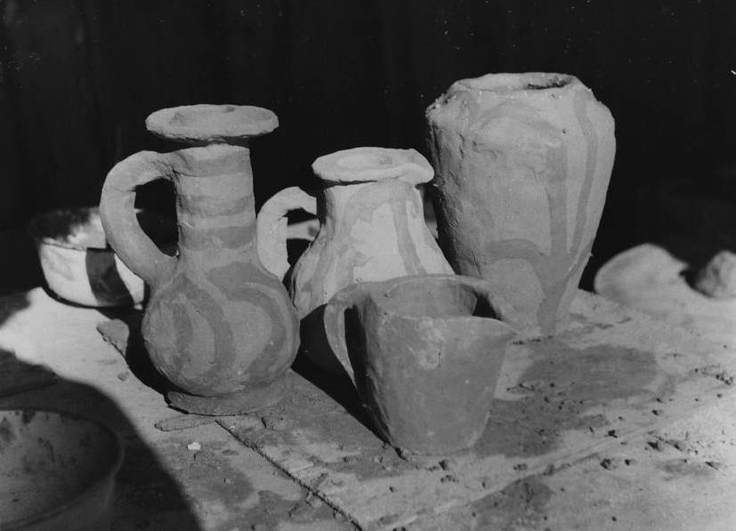
Pots, Trevor, 12 years
‘Dad's getting the new tractor I told you about,’ said Alma.
‘Not as good as ours,’ said Lois, and with chatter of this sort coil was joined to coil and pots and figures grew. Trevor, who had been working at speed was thrilled, for he had his pot eighteen inches high and it was still growing, but soon he had to hold the sides so that it did not sag. The coils became looser as he manipulated them, and his eagerness increased till, with a shout from Neville and Pearl, the whole pot slumped to the table. For Trevor the pot was a tremendous success. He was overjoyed. Then he began again, with caution, and a pot rose that was firm and solid but not as high as the one that had thrilled him and the others a short time before.
Later, Trevor planned a group of shapes he was going to make during the week, and he assessed the amount of clay he would need. He then collected his clay and prepared it so that he would have an unbroken time at constructing the pots he planned. This was the way the keener potters worked.
I saw that there was much boisterousness from one section of the class at that time. However I felt that this good fun was valuable experience. Often there is a similar outcry of noise in the beginning of creative work. This process appeared valuable from another point of view also, in that there was really an active discussion of values going on. The potters talked about form and decoration as they worked. They were also establishing each other's individuality as persons with this power to know and express opinion. There was a new form of discipline and responsibility to the people and materials which I had not seen before. The work itself appeared to maintain a new control over the individuals.
The clay we used was not good, and in the first months a large number of pots cracked in drying. We returned to scientific method to solve the problem. We tried several ways of storing and drying them. We dried some rapidly in the stove, and these all cracked badly. The ones that were sun-dried also cracked, but those which were placed in the dark of the store room cupboard and dried slowly did not crack at all. We found that bottoms cracked unless we turned the pots early in the process of drying. We enjoyed these experiments, and found that this sort of work added considerable purpose to our discussion. I began to feel that the result of this sort of study of real problems was true education.
Another problem that arose was how to deal with the large unmixed lumps that the clay commonly contained. I found it better to have them removed. Experience showed me, too, that it was best to provide a target for them on the fence rather than allow the children to select their own. We had already begun regular discussions on behaviour and rules, in order to work out a system of values that suited us. We found it interesting that the same group of children saw that it was they who were involved in most breaches of discipline. These were the few who wanted to throw clay, and since we worked in an open-air shelter-shed this relaxation seemed in order. I found that I could solve a great number of behaviour problems such as these by allowing the children the opportunity to discuss and solve the situation by some sort of resolution of energies.
I noticed that it did not seem necessary for a child to end a period with a pot or figure every time. Trevor gained considerable satisfaction from his pot-building to the point of collapse, and he enjoyed even this when the inevitable took place. The children recognised this as a sort of experimentation, and some of the best pots were made by those who were habitual experimenters. However as the practice of planning a pot became generally accepted, much of this experimentation ceased. On the other hand it is very important that a child who has a pot unfinished at the end of the day should be allowed time to complete it on the following day. This principle applies to any valuable task.
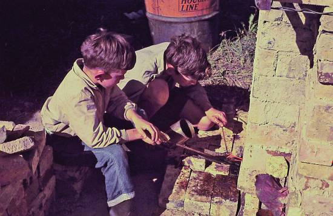
David I. and David W., kiln firing, 1959.
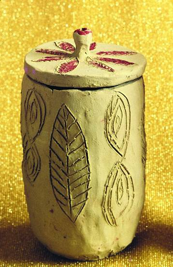
Lidded pot by Mary H., 12 years
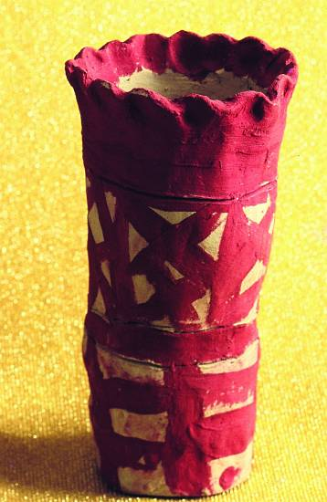
Terracotta pot, anon.
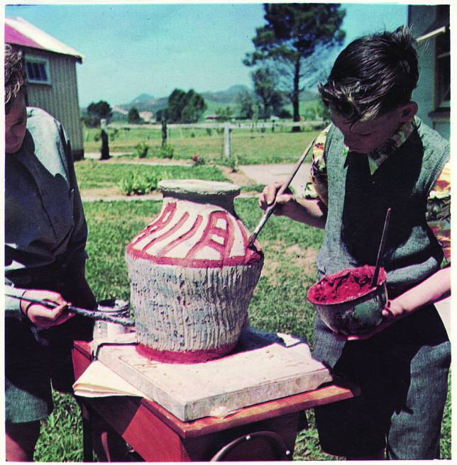
Large pot decoration, David and Allan
The children sketched pots that were most ingenious, but in many cases the pots did not arrive at the shape sketched. It appeared that the planning served only for a general sorting-out of ideas. However, a child would often say he wanted to make a particular shape and would do so at once. At other times I have seen children start off to make a particular shape but modify it again and again as they worked.
We collected some of the red earths from the ridges and mixed them up with water into slips. This was used to decorate the pots, and the children also drew designs into the clay on to the raw surface as well as through the red slip to cream coloured surface below. Sometimes they pressed a stick form into the surface.
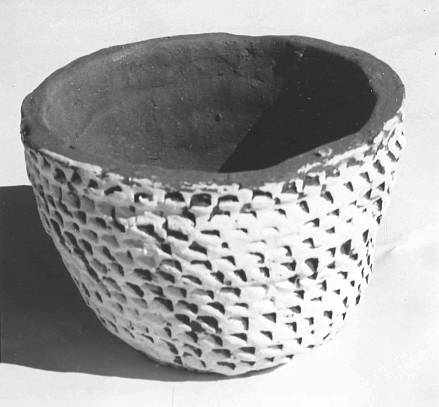
Decorated pot, Joyce, 10 years
I have always been amazed at the child's intuitive ability to get the feeling of a particular form or surface by a few experimental strokes of the brush in the air above the pot.
It seems that if he hasn't any particular idea in mind the area ‘dictates’ its own needs. The artist then, without hesitation, is able to apply the first stroke of the design. He reconsiders this and is able to add further strokes which ‘demand’ other wide or narrow lines or forms. The child seems to know intuitively what the needs of a given form are, and he knows when the design is complete. I have noticed how certain children, usually those who have been denied such satisfaction as these, will at first over-decorate a pot to the point of spoiling it, but if they are allowed repeated satisfaction from the craft they soon work with skill and taste.
The young potters were interested in the technique of scratching through coloured slip into base clay. They usually accented the basic line of the design. I noticed that they made use of unintentional discoveries of technique during decoration. Thus they explored sgraffito technique through common clay and various slip decorations; but none of these techniques were taught. The children discovered them as the need arose. New children who came later absorbed this information and soon were just as skilled.
The first pots that the children made were usually decorated with leaves, trees, seed shapes, fish, seaweeds, and more rarely flowers. As they became more confident in their approach to design they began to use related line, mass, colour, and texture in an abstract way.
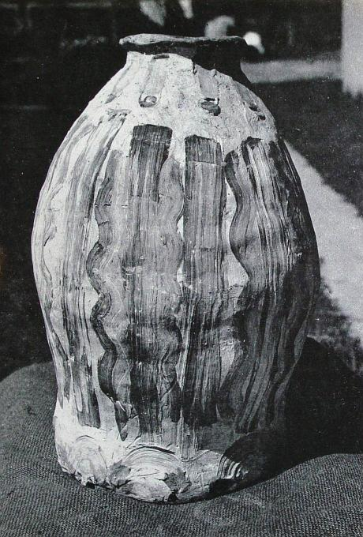
Pot by Kelvin
I saw a good deal of cliché decoration on the first pots. I was careful however, to make my comments about the good aspects of the work, for I believed that by so doing I would encourage the work along the right lines in the quickest manner.
From the beginning very definite attitudes to clay work were noticeable. A dozen or so children who were enthusiasts spent all their spare time at some part of this activity, such as turning the drying pots or preparing a new batch of clay. These people were potters. They were also young authorities on the subject and could discuss the work done with increasing skill and awareness of the values of the pottery. I do not mean that they learnt values of appreciation; rather do I suggest that they developed inherent abilities that they had neglected to use until we became engaged on such a programme.
There were also a few, and not all the same people, who found a creative outlet in building, stacking, and the process of firing the kilns. They considered it their privilege to attend to every firing and to watch and stoke often late into the night. There were times when I had to take the tired stokers home and return to complete the firing. No child was unaffected by some activity in the chain, and there was no one who did not at some time make pots that were considered by the other children to be of the finest order.
The boys were the really keen potters, kiln builders, and firers; but two girls, Joyce and Pearl, were outstanding.
These children were particularly interested in the clay activity as a whole, and their natural understanding of the media helped them to overcome any technical difficulties as they arose. It was through this group of confident potters, both boys and the girls, that the advance into large pot construction and the development of controlled and fitting decoration were made.
The established pattern of work with clay continued for some time, till one day two boys came to me and suggested that they make some really huge pots.
‘Instead of making four or five, as I like to sometimes, I think it would be really far more fun to make one huge one,’ said Trevor.
‘We'll have to roll coils quite differently,’ added Bevin, who was already considering the new technical approaches needed for handling large pots. This was a new point of departure and was most important and interesting for all the children. It was a natural enough extension, but it is one that is often disregarded because of expense of materials or the technical problems involved.
Each of the boys prepared a large bin of clay, mixed it with more coarse brick-powder than usual and as well added liberal amounts of the woolly seed-heads of the native bullrush, raupo. This was added to strengthen the clay so that the pot would hold its shape as greater heights were reached. The pounding of the fired shards or brick and the collection of the raupo heads from the swamps became an added part of the activity. The prepared coils were large, and the handling and thumping down of each coil involved new hand techniques. When the coils began to rise on the form it was found most convenient to sling long coils over the shoulder so that both hands were free for the thumping down of the mass after flattening. This process gradually assumed a rhythmic pattern as the potters shuffled around their growing pots.
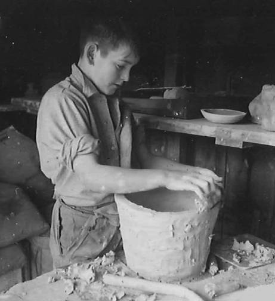
Kelvin coiling a large pot
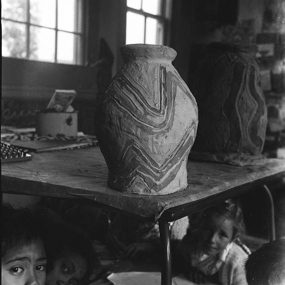
Pot by Bevin
Control of the form and the techniques of coiling were far easier for the children than with the small pots, and it was obvious that the entire process was a far more pleasurable one. The preparation of a large bin of clay did present problems until we discovered that we could work large heaps of clay with the feet. The ‘grog’ and raupo could be added during the re-heaping process.
Bevin, Trevor, Leslie and Kelvin went to the bins with clay boards and began portering clay back to the mixing table.
‘Bevin, you and I'll have this bin,’ said Kelvin.
‘Oh, go on!’ said Leslie, ‘It's mine.’
There was no time nor wish to start a quarrel. The three began to roll long 'snakes’ two inches thick and often a yard or so long. These they coiled like long cobras into their bins and in an hour they began rolling out large slabs of clay for pot bases on boards covered with brick dust.
‘Watch me, Les,’ said Bevin as he took a yard-long roll, slung it over his shoulder, hunched himself to take the weight evenly, and rhythmically stamped and thumped the coil down into place as he moved around the slab.
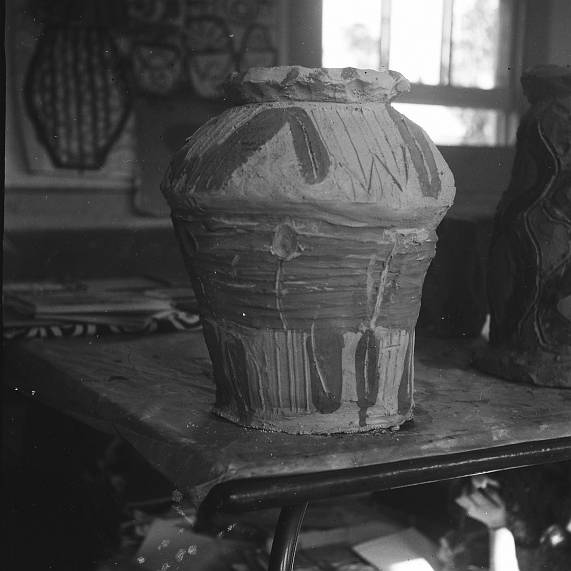
Pot by Kelvin
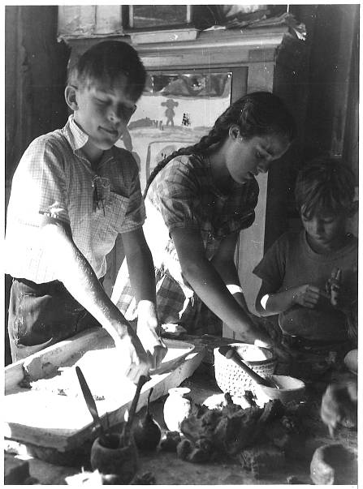
Varley, Linda and Colin press moulding and clay mixing
‘Like ramming a post, eh Les?’
‘If you leave that crack between the coils, Bevin, your post will fall to bits.’ A pause …
‘How's that for thumbing?’ said Kelvin as he clawed a large swipe of clay off a side to trim it to shape.
The sides slowly grew until the pots were fourteen or fifteen inches high and the potters had difficulty in looking into their shapes.
Then they climbed on boxes and continued coiling. Regularly they punched out the sides, sometimes plastered more clay on a thin place and leaned back to look and talk.
‘How's it look from your side?’
‘Bong it out there a bit,’ said Trevor, who had finished his lunch and was beginning to mix a further batch of clay.
‘Pearl wants to make one too,’ said Trevor.
‘A lot of work, Trev!’ said Les.
Meanwhile Kelvin was leaning over his pot peering into the dark inside.
‘Aaaaaah—a crack … Oh, ohoh, oooooh! Hey did you hear that?’ he said as he began to speak into the hollowness of his pot.
‘Trevor, listen … Ooooh, wooooo, wooooo!’
Kelvin continued booing and oohing into the depths of his pot while Leslie held his ear to the mouth of his and slapped the wet clay sides lightly and rhythmically.
The noise fun went on, until most of them climbed down and ate their lunches. They sat around their pots and talked about the new experiences, particularly the sounds they could make with the pots. They spoke of the satisfactions there were in clawing handfuls of clay off a pot to trim it to form, and that of ‘bonging’ a wall out to correct contour.
Slowly the pots were closed in nearly to completion. I was interested to see the way they scraped their pots into the desired shape at this stage, and I encouraged their vigorous use of sticks, boards, or finger tips.
Kelvin prepared some experimental lips for his pot, set one into place and stood off from his box, rejected it in a flash but built up a second into a perfected and completed form.
Meanwhile the others grew, eight large pots in all, each of some twenty to thirty pounds weight. The shapes were smoothed off, but not with water. The children saw that pots of these dimensions required a textured surface that did not look overworked. The decoration required much more decisive strokes. Most pots relied on the basic strength of a few strokes, and over-elaboration was rarely found.
There was always a large audience during such a session to watch the transformation of clay into pots. There were murmurs of approval. Sometimes someone doubted a particular development and a discussion ensued. Generally there was someone in the audience who wanted to make a pot.
Ever since then, there has always been someone who asks to make a very large pot. This has kept fresh these particular satisfactions. During the years following, other clay techniques have been developed, but no better work has been done than when the children made the first kiln of giant pots.
I found it necessary to introduce the technique of plaster moulds. The process of pressing clay into a plaster form, smoothing-off, designing, and decorating was easily grasped by the children. A feature of this method was that the mould-pressing process allowed the child to press the clay in a very relaxed way. Rhythmic pressing processes much like kneading were developed. Later I used this process as an introductory clay activity for a group of entrants because I knew that it would allow them to make high quality pottery quickly without having first to learn the coiling process.
The children soon developed satisfactory thumbing, palm pressing, and finger working methods for themselves. They discussed the way their hands could be used and I joined with them in their enjoyment of these discoveries of the satisfaction of movement. This lead them on to textural experimentation on clay. I had just introduced the children to oil paints and there was a good deal of carry-over of principle and technique. I did not teach techniques here, but when a child found a new way of using his hands, brushes, and clay, I assisted him to realise his discovery and this led to others seeing and trying too. For example, if a child found out that a sawn end of timber could make waving scraped lines in clay and give a good textural surface, I encouraged the child to use this knowledge when he painted as well as in his pottery. We were able to prepare hundreds of textured tiles which recorded the many discoveries we had made. Many natural surfaces such as bark, leaves, timber, and shells were also used to press into clay surfaces. A few children pressed in small branched twigs, but most made up their own textural surface by some sort of scraping, drawing, pressing, or brushing. Some of the potters working at moulds, in particular Varley, derived added satisfaction from working clay into moulds without watching or with closed eyes.
A few children have always preferred press-mould work, and although I hesitate to say that these were the ones who had a greater interest in design and decoration, in many cases it did seem so. There have also been two or three rather insecure children who liked the controlled work of mould-making and clay-pressing.
There came a time when the drying pots filled the shelves to overflowing.
The pots were turned regularly and finally were bone dry. The children returned to look over their pots and re-lived the satisfactions they had enjoyed as they made them. As well they came to look at other people's work. Varley came up to the shelves one day and turned a pot nimbly in his fingers. He peered rather shortsightedly as was his habit, then he put it down.
‘No, it's too heavy, and the lip's not quite drawn in enough, but that's a lovely brush stroke here.’
He moved on to another pot of his own. I could see he liked that pot a lot. Many children came in to look over their pots and to make judgements that involved real values. I noted a growing respect and care with the work of others, and it was interesting that the children asked that very special pots and figures should be put away in a cupboard where they would be preserved and would not run the risk of being damaged.
We had enough bricks collected by this time to begin building a kiln. We made a small bottle-kiln shortly after. It was very simple and rather crudely built: steel supports held up the fire-port brick arches, and we had to unload the kiln from the top, which meant a certain amount of dismantling. There were three small fire-ports around the base of the bee-hive, and we had worked out an arrangement to fire the kiln from the chimney as well.
We stacked all the pots we had made into the base of the kiln supported on a few bricks, and sealed up the chimney stack with ashes, sand, and clay mixture. We had gathered a large heap of wattle and pine logs and branches beside the kiln and were then ready to fire the next day.
The valued articles all were inside the kiln. The shelves were bare except for a few ‘green’ pots. The hopes of every child and the success of the whole idea rested on the next day's work, and the three small fires that would be lit at dawn the next day. I had little idea how to fire a kiln but I knew that the firing had to be slow at first until the water had been driven off the pots. I felt sure that we would have considerable losses and had prepared the children for this.
Rex and Neville sat around the small ports and fed sticks into the fires ever so slowly, so that the fires rarely swept up into the chamber. By the time we arrived for school they had the kiln warm but little more, except where the fires burned in the ports. They raked the fires when they appeared to be too large and fed them as they died down. Hour after hour they worked, slowly bringing the flames up and up until the time came to load large branches and limbs end on, into the ports. Flames were roaring up through the pottery by then and the wedges of clay used to block the chimney cracks were shrinking away from the bricks.
‘Was that a bang, Neville?’ asked Rex anxiously, ‘or was it a stick blowing up?’
‘Rake the fires quick, rake ‘em quickly, it's pots blowing up,’ yelled Neville. Well, they raked and built up the fires until they became less and less anxious about the various bangs that continued to come from the fires and or the pottery within. They more or less gave up and went on firing pretending that the bangs were really only sticks. They spoke of ‘clay bangs’ and ‘wood bangs’ and seemed to know which was which but I felt somewhat confused by these sounds and was worried in that I didn't seem to see the differences as they did.
By lunch time there were flames gushing out of the hundreds of cracks all over the kiln. We then began to throw small branches and sticks down the chimney and gradually the flames built up to a roar. Pine cones and larger branches were added, and as the afternoon wore on we saw bricks glowing dull red. This was exciting for we knew that our pottery, whatever was left of it would now be nearly fired.
We stoked, repaired, threw more branches in, levered larger logs into the firing ports, and dull thuds continued to come from within. Everyone helped, even the little ones like Eric and Mary until late in the afternoon all had grown very weary; and most of us were so despondent at the list of thuds and ‘clay bangs’ that had been recorded as scratches on a brick that we were ready to give up. We closed over the ports with sods of earth, lifted the end of a benzine drum over the chimney, and we left it. None of us knew what we had done. We knew what we wanted to do and had an idea that we would get something approximating brick in appearance when the morning came, but that was all.
When I saw the kiln the next morning I was miserable. It looked so crude and dirty, blackened with smoke, with swirls of ash in the air around the ports. I prepared the children for the worst, for I felt that these few bricks must contain ruined fragments of the pottery they valued so much.
‘Look at the clay that we parged the kiln with. It's turned to earthenware. Yes, keep some bits. It's wonderful what has happened to it. It's no longer clay. We couldn't turn it back to clay even if we wanted to,’ I added.
‘It's earthenware,’ said Joe.
Rex lifted off the benzine drum-end, and we began to lift off the cooler upper bricks and toppled the hotter lower ones to the ground.
‘Look out, Joe! They're still hot… Not yet, Mavis! They don't cool that quickly … They would make good hot-water bottles, wouldn't they?’ Slowly we prized them off, pushed them out of the way with sticks, and lower and lower the structure went until Rex ventured to look over the chimney into the ash mass below.
‘They're still there! Yes, they're there! One's whole. It's yours, Trev. Oh, it's hot!’ He reeled back as a swirl of ash and smoke blew into his face.
‘I'd like a look.’
‘Me too!’
‘After you, Eva!’
The baked earthenware daubing clinkered about our feet, as caution was cast aside. Hands wrapped in handkerchiefs threw bricks away, and soon we saw the heap of pottery covered with ash, with here and there a pot showing through. They were burnt to a good light biscuit with the red slip decorations a dark rich red and not one piece was ‘dunted’, chipped, or ‘clay banged’. We dug in the hot ashes, and for an hour or so we looked over every piece and discussed the exciting results.
The empty shelves were refilled with fired pottery, and they have been refilled and emptied many, many times since. The pots have been better, the firings have been just as perfect, but this discovery of the firing process made the beginning of pottery a wonderful experience. Every heart was full.
The process of pottery-making itself is very important. I feel sure that the quality of the work as well as the technical advancements made by the group were related to the activity as a whole.
I spoke to the children about comparable discoveries in primitive societies, and for some time we learnt about the discovery of fire, iron, bronze, and steel, and we melted various low-melting metals in simple ‘forges’, bringing an understanding to these studies that we had not known before.
The children began other crafts known to ancient and primitive peoples. Varley and Trevor made wood and wire sculpture heads as well as lino blocks and paintings. Neville made a Polynesian canoe complete with block-printed ‘tapa’ cloth sails.
The pottery and figures stayed on shelves for some time, and regularly the children came back to admire the work and to handle it. They were critical of the pots, and their discussions of the values of the work seemed very sensible to me. Sometimes a child did not give a very comprehensive evaluation of a pot, but I saw that they knew. As well, they appeared to retain this ability to make assessments of the value of a thing long after leaving the primary school and ceasing to do creative work. Four years after, Varley came back to see what the later pupils had been doing. In the same way as when he was a boy, he indicated the good and sorted through the work to find strengths. He did this with confidence and skill.
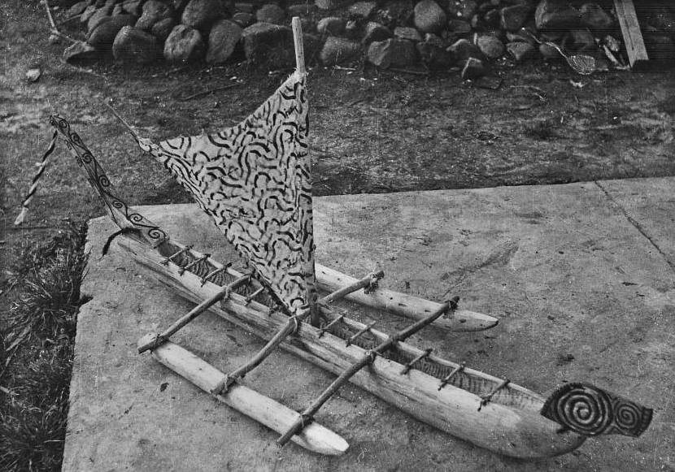
Neville's Polynesian canoe
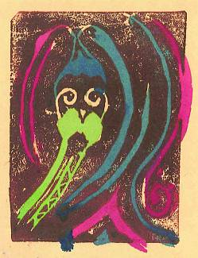
Native head design by Varley
‘The top is too fat there, and I think the colour could be darker,’ he would say. Varley undoubtedly derived more satisfaction than most from the work we did, for he continued to maintain an active contact with the school for as long as I stayed in the valley.
He helped at every firing of the various kilns, and at times he wrote short poems or observations on his experiences.
‘I wrote this the other day,’ he would say; or ‘I cut this out from a bit of box wood. I thought you might like to show the children.’
‘I would like to mount it on very black fine-grained wood, but I haven't got any.’
I was very interested in one aspect of his continued expression. His style of language was much the same as he had used years ago when he was at school. The important thing, however, was that he continued to know the value of things, and I think that this ability resulted in large degree from the pottery activity and the feeling for material gained over a number of years.
We rebuilt the kiln about a year later and made 'saggars’ in which to place ware for glazing with low-temperature lead glazes. The kiln was too unreliable. Often ‘good pots’ did not ‘come out’, or the glaze melted and ‘treacled’ down the sides in an unsightly way. Generally the children felt that the glazes were not desirable, but they found that it made their pottery more acceptable at home. 'Some pots need glaze, and most don't,’ was Mary's comment. We couldn't understand the glaze firing process, and except for rare occasions we gave up glazing. Later, however, we built a small stoneware kiln which we used to fire high-temperature glazes. The glaze materials were collected locally. Silica sands and various ashes were made from selected grasses and woods. We used crude oil to get the higher temperature, and the results were certainly better than the lead glazes of the past.
Five years later we arrived at a new beginning, when fifteen children came from a far-away school. These people disliked school and lacked ability and the desire to express themselves. They came into an atmosphere in which creative work was developed to include art, crafts, creative writing, poetry, drama, dance, and some number activity. Their attainments were below standard, and they felt that they could never do good work. I introduced them to pottery, and a programme was worked out for the remaining two terms of the year. Their coiled pottery was very limited, but generally they extended their work in size and quality, but it was the plaster-mould work that really brought out their confidence. Plaster pressings may not be a very expansive medium for ceramic work, but the amount of confidence that the process gave these pupils was great. They enjoyed filling large areas with designs, and all gained satisfaction from their efforts. One of the really good things about press moulds was the especial suitability of the large open areas for decoration.
The satisfactions enjoyed here were sufficient to encourage them to improve their ability and interest in coiled pottery. The new children had not the slow buildup over many years of pottery activity, and they had missed the discussions and experimentation that we had been involved in over these years. The mould processes gave them satisfactions which assisted them to overcome these omissions and do coiled work comparable to the work of others.
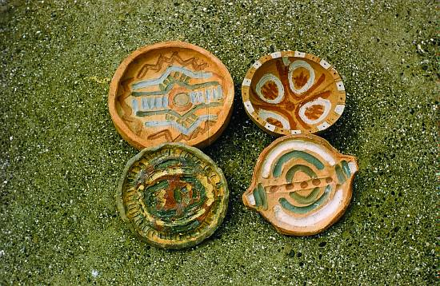
Press moulded plates and bowls, Bernard, Kelvin and Sonny.
I felt that one boy, Nick, who came later, was probably a person who had never known the satisfaction of having made a thing for himself. He had begun many tasks but had never finished them, and as I watched him attempting to work in clay I saw that he must be helped to end up with a pot that day.
I encouraged him, and then in near desperation I asked Nell to help Nick finish his pot. Together they completed a simple cylinder. The children were genuinely thrilled to see the crude, but finished pot and praised him.
‘Good on you, Nick! I like straight-sided cylinder pots.’
‘Cylinders are my favourite form,’ said Helen.
‘Design it, Nick,’ said David.
David showed him how to scratch through the red slip and told him about the various coloured slips. First, he painted over the whole pot with red slip and applied layer after layer of slip (and energy) to it. Slowly it grew like a piece of mould. He scratched through the slip, designing it at various levels of painting, but I could see that he was thrilled as ever he could be with it. The pot was subjected to about every indignity it could take, until at the end of the day he had finished. Nick was expansively happy at his creative work, and he had been acclaimed by the group. This assisted him in his general behaviour in the school, and as long as he received satisfaction of this order he behaved well, whereas previously he had behaved badly.
Over the years it became necessary to return to starting points and build afresh. These new beginnings are vitally important to the process of continuous growth. Each re-beginning in pottery has been different, but each time, even though I know too well the processes involved, I have attempted to preserve some of the feeling of discovery that we knew at the first firing. I continued to value the activity and knew this to be largely the reason for the pottery successes.
Other beginnings have been with a stone-ware kiln and later a large salt-glaze kiln designed by a craft potter. At the height of the last pottery resurgence Barry Brickell, a craft potter, visited us. The children and he sat amongst the pots and talked about pottery.
‘Now this is a pot, honest and full of life. What a lovely fireburn on this side, and the design certainly fits the shape and the form, doesn't it? You made it, Kelvin? Beautiful work!’
‘Now this person is a real potter. I can see that at once. He knows the feel of clay and has done as much with this piece of clay as I think he could have.’
It was a wonderful experience for the young people, and the sort of one they should have, and Barry told me afterwards it was a wonderful one for him too.